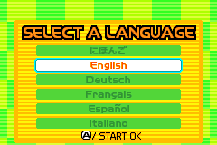
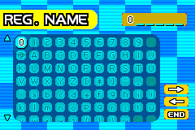

Sonic Advance 3 (USA) (En,Ja,Fr,De,Es,It)
Flash 512K
Cartridge Identity
- Game Code
B3SE(FamilyB3S)- Header Title
SONICADVANC3- Maker / Revision
78/ rev0- ROM Size
- 16.0 MiB (16,777,216 B)
- Save Media
Flash 512K- SHA-256
f937fa93b97b14b9fb9fce98844c534f936222d21d1fdb5f1af42292bad32c85- Engine / SDK Group
comm-016(22 families)
Screenshots


ROM Assets, Compression & Audio
- BIOS Compression
- LZ77 (
0x10): 27 streams · RLE (0x30): 101 streams - ROM Pointer Tables
- 215 tables (5 pointing to validated compressed streams)
- SDK Backup Tags
FLASH512_V131
Hardware MMIO Subsystems
ppu_display0x80bbe74,0x80bf0c4save_bus_sram_flash0x80c6844,0x80c6a98
Regional Variants & Revisions (Family B3S)
- Sonic Advance 3 (Europe) (En,Ja,Fr,De,Es,It) (
B3SP, 16 MiB) - Sonic Advance 3 (Europe) (En,Ja,Fr,De,Es,It) (Beta) (
B3SP, 16 MiB) - Sonic Advance 3 (Japan) (Demo) (Kiosk, GameCube) (
B3SJ, 16 MiB) - Sonic Advance 3 (Japan) (En,Ja,Fr,De,Es,It) (
B3SJ, 16 MiB) - Sonic Advance 3 (Japan) (En,Ja,Fr,De,Es,It) (Virtual Console) (
B3SJ, 16 MiB)